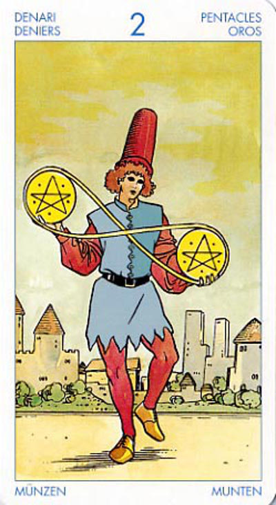

Двойка Пентаклей
Значение: При гадании карта обычно означает, что обе возможности, перед выбором которых стоит спрашивающий, равны; что бы он ни выбрал, положение его не изменится. Да и настроение тоже.
Работать на двух или более работах, содержать два дома, одновременно развивать романтические отношения с двумя людьми.
Двойка пентаклей - очень суетная карта. Обычно указывает на необходимость беготни, какой-то лихорадочной деятельности, скорее всего во имя денежных интересов.
Контракты, их заключение, документация; сумма денег (чаще мелкая).
Под двойкой могут подразумеваться и разного рода препятствия, правда, не очень значительные, но вызывающие досаду.
Двойка Пентаклей, как и Двойка любой другой масти в колоде Таро, отражает ситуацию нестабильности и шаткости положения в обществе.
Прежде всего, постарайтесь не суетиться: что бы вы ни сделали, находясь в состоянии паники и нервного стресса, это не только не улучшит ситуацию, но приведет к еще большему углублению кризиса. Дайте себе возможность отдохнуть и сосредоточиться - и правильное решение придет само собой!
Стремление браться за несколько дел сразу. Суета, административные перемены. Мелкие суммы денег.
В перевернутом виде означает, что лучше остаться «при своем», ничего не меняя, потому что перемены будут скорее неблагоприятны. Эта карта может указывать на то, что вам грозит потеря денег, энергии или же расположения других людей.
В перевернутом положении двойка пентаклей - это слабость, вялость, отсутствие энергии, ситуация, когда работа стоит, а человек валяется на диване, не в силах к ней приступить. Страх перед предстоящей работой.
На самом низком уровне перевернутая двойка пентаклей может давать нежелание работать.
Отрицательное значение: все наперекосяк,притворство,неприятности в личной жизни, сомнения, тревоги,проигрыш. Совет не брать деньги в долг или в кредит-будет невозможно рас платиться (или для этого придется влезть в новые долги).